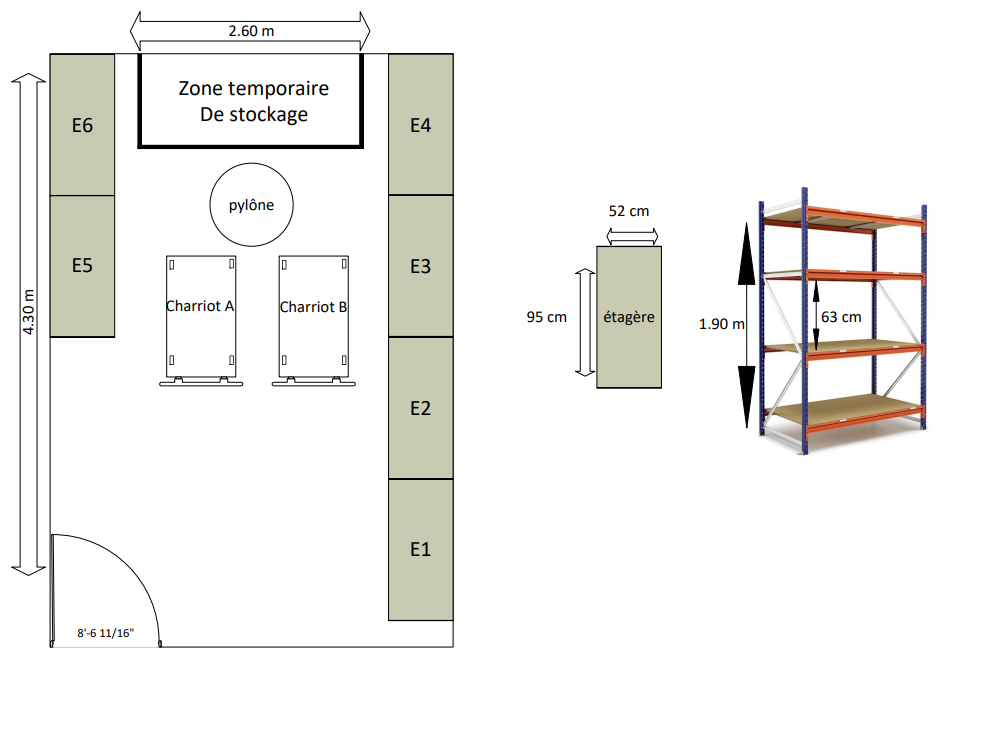
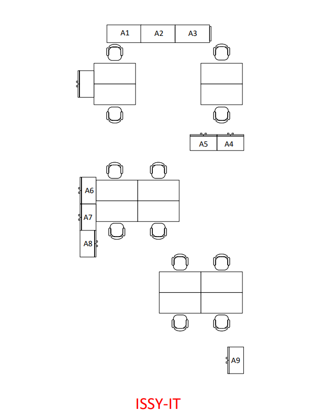
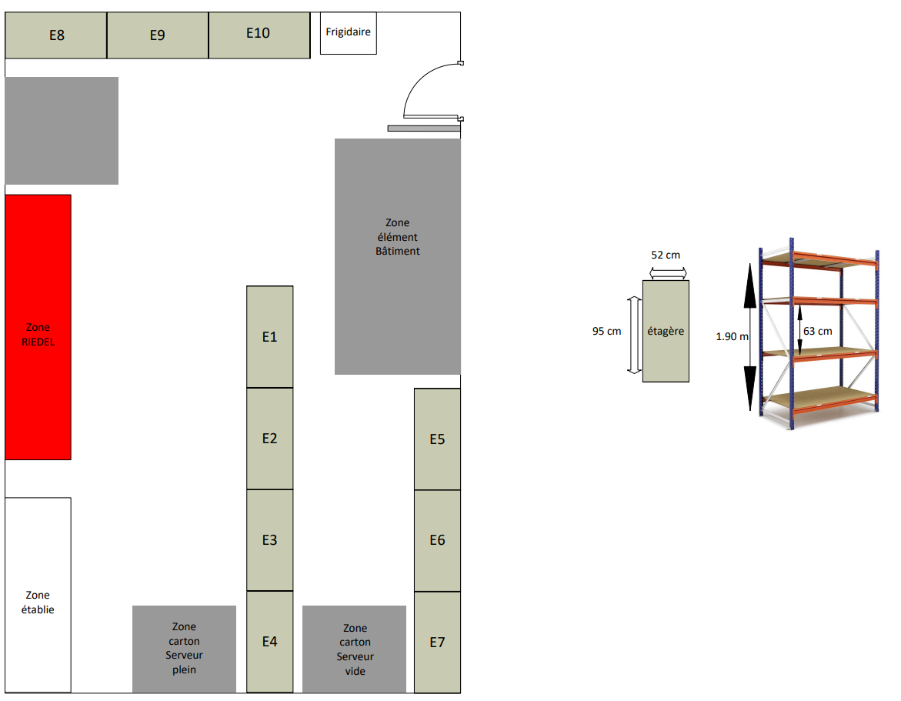

Asset management
Contexte
Dans le cadre de mon alternance chez Cognacq-Jay Image, j’ai participé à plusieurs actions d’asset management afin d’améliorer l’organisation physique des équipements et la gestion du matériel informatique.
Cette activité avait pour objectif d’optimiser le rangement, le stockage et la visibilité du matériel utilisé par les équipes IT, tout en facilitant l’identification des équipements.
Objectifs
- Réorganiser les espaces de stockage
- Optimiser le rangement du matériel informatique
- Faciliter l’identification des équipements
- Structurer les zones de stockage
- Améliorer la visibilité des ressources IT
- Préparer les espaces pour les futurs besoins
Environnement technique
Travaux réalisés
Organisation des espaces
Réorganisation des différentes zones de stockage afin d’optimiser l’utilisation de l’espace disponible et faciliter les interventions des équipes techniques.
Création de plans
Réalisation de schémas et de plans d’organisation pour représenter la disposition des équipements, des bureaux et des zones de stockage.
Identification du matériel
Mise en place d’une organisation logique des équipements afin d’améliorer leur suivi et leur identification dans les espaces IT.
Optimisation du stockage
Participation à l’amélioration des zones de rangement afin de faciliter le stockage des équipements et accessoires.
Plan d’organisation des bureaux IT
Exemple de plan réalisé pour organiser les espaces de travail et identifier les postes présents dans l’environnement IT.

Organisation des zones de stockage
Plan d’organisation des espaces de stockage avec répartition des étagères et des différentes zones matérielles.

Réorganisation d’une zone technique
Exemple de réorganisation d’une zone technique destinée au stockage temporaire d’équipements et à l’optimisation de l’espace disponible.

Résultats obtenus
Impact utilisateur
- Espaces plus lisibles et organisés
- Recherche du matériel facilitée
- Meilleure visibilité des équipements
- Optimisation des zones de travail
Impact entreprise
Cette organisation a permis d’améliorer la gestion physique des équipements, de structurer les espaces IT et de faciliter le suivi du matériel informatique.
Compétences mobilisées
- Gestion des ressources matérielles
- Organisation des espaces techniques
- Création de schémas et plans
- Gestion d’infrastructure
- Optimisation du stockage
- Documentation technique
Bilan personnel
Cette mission m’a permis de développer mon sens de l’organisation, ma capacité à structurer des espaces techniques et ma compréhension des enjeux liés à la gestion du matériel informatique.